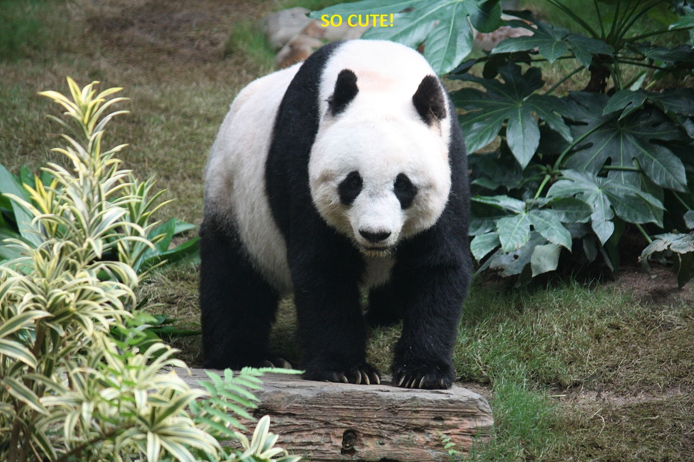

The giant panda (Ailuropoda melanoleuca; Chinese: 大熊猫; pinyin: dà xióng māo), also known as giant panda or simply panda, is a bear native to south central China.
It is easily recognized by the large, distinctive black patches around its eyes, over the ears, and across its round body.
Giant panda at the Ocean Park Hong Kong

The name "giant panda" is sometimes used to distinguish it from the red panda. Though it belongs to the order Carnivora, the giant panda is a folivore, with bamboo shoots and leaves making up more than 99% of its diet.
Giant pandas in the wild will occasionally eat other grasses, wild tubers, or even meat in the form of birds, rodents, or carrion.
Panda cubs:In captivity, they may receive honey, eggs, fish, yams, shrub leaves, oranges, or bananas along with specially prepared food.
| Year | Wild | Change | Captivity | Change | Total | Change |
|---|